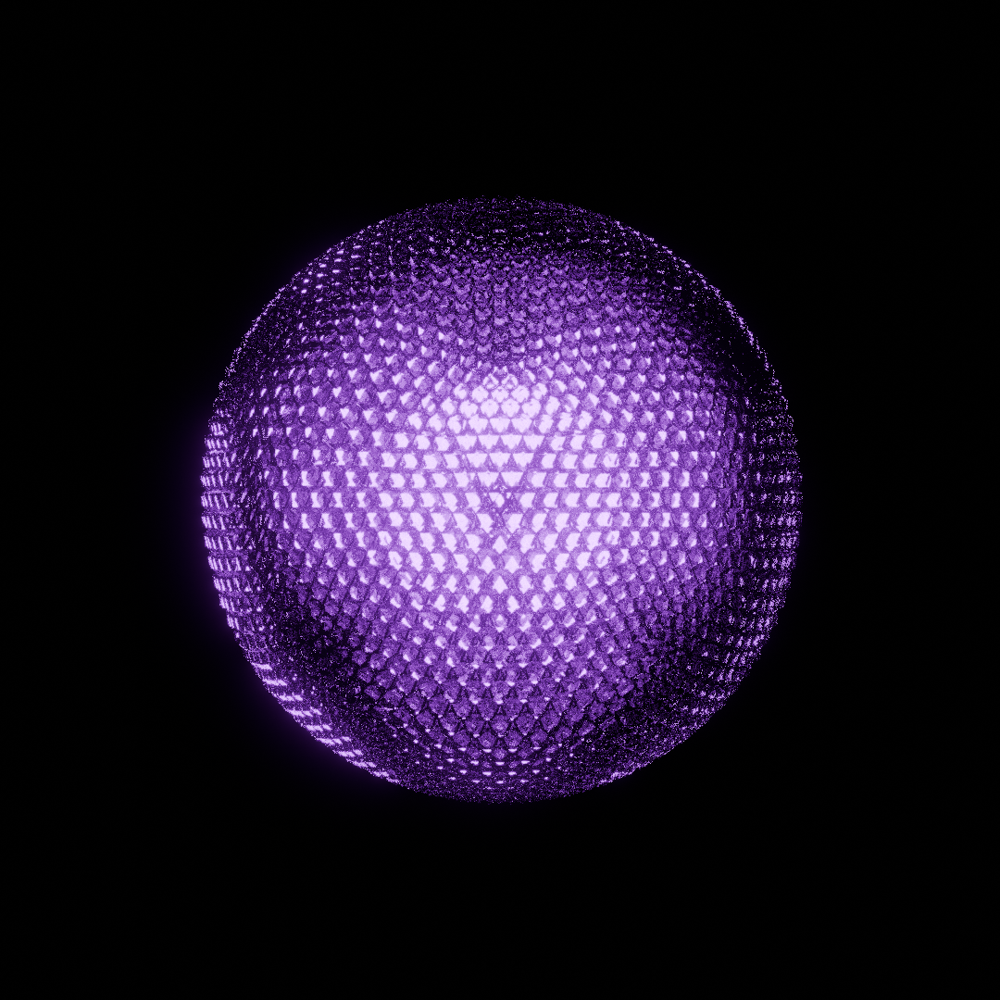
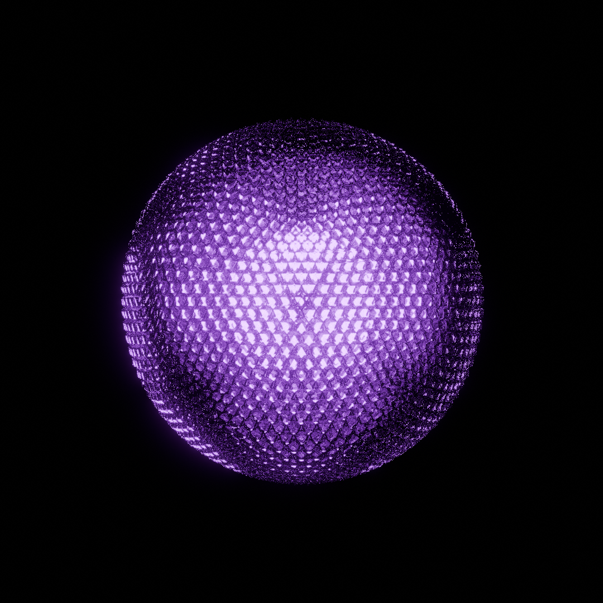
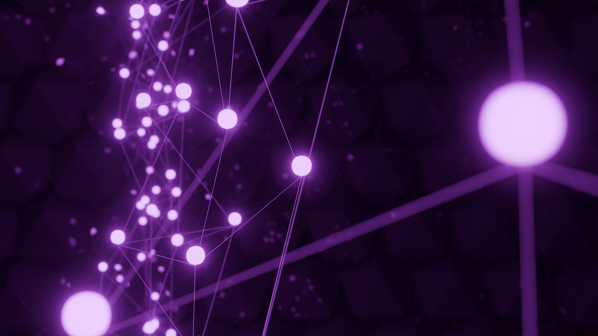
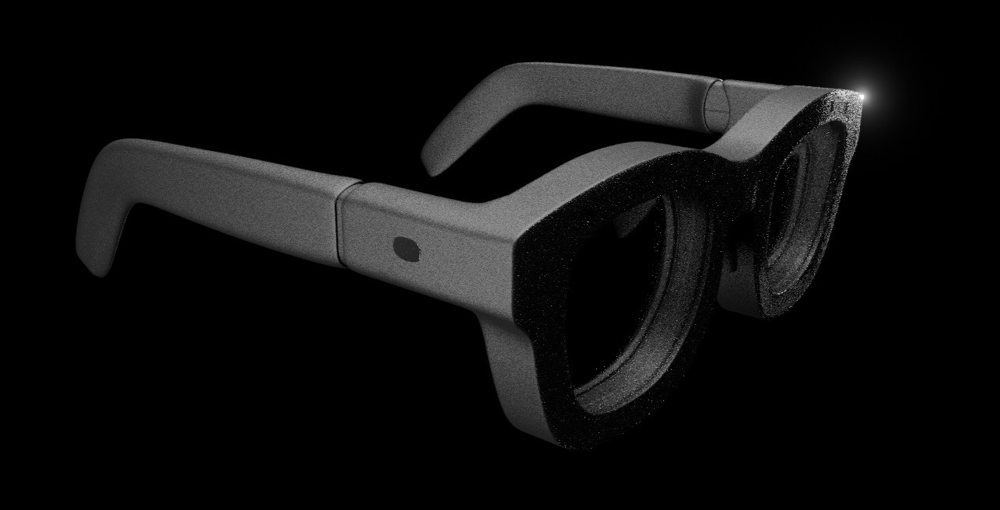
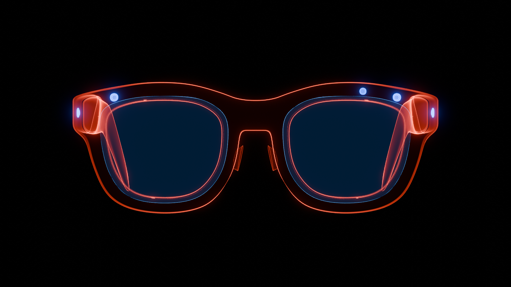
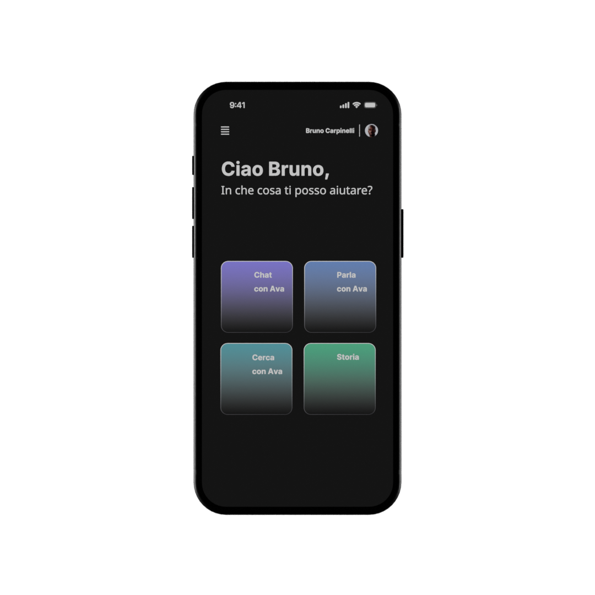
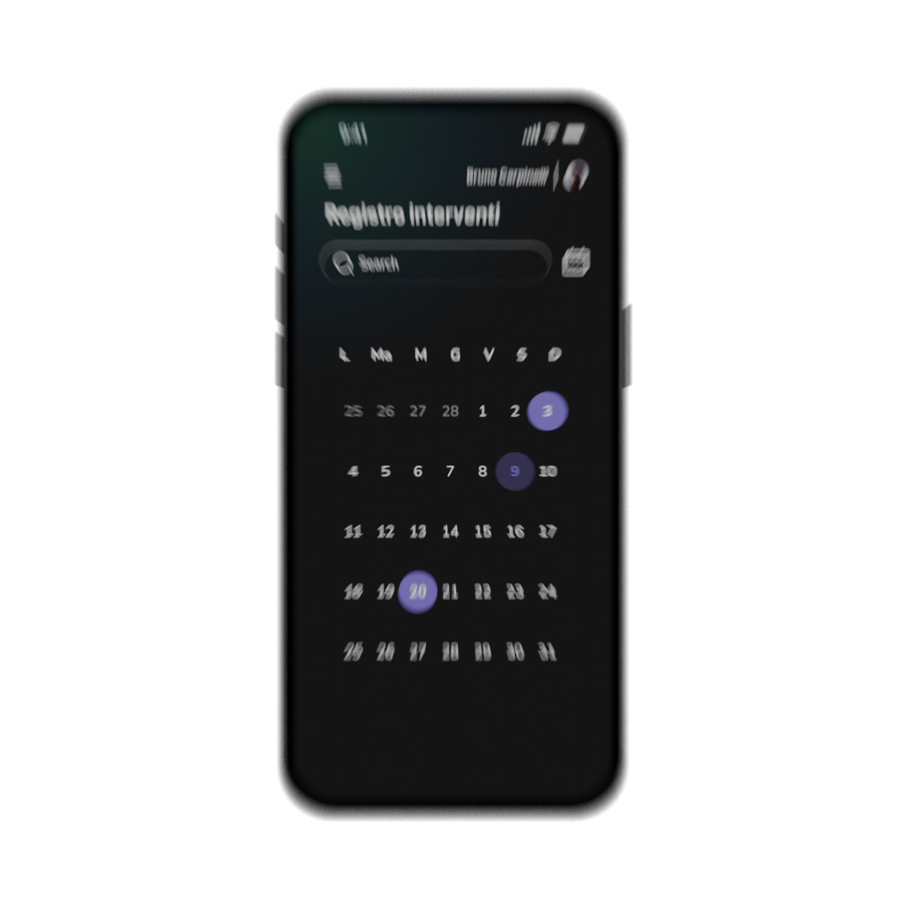
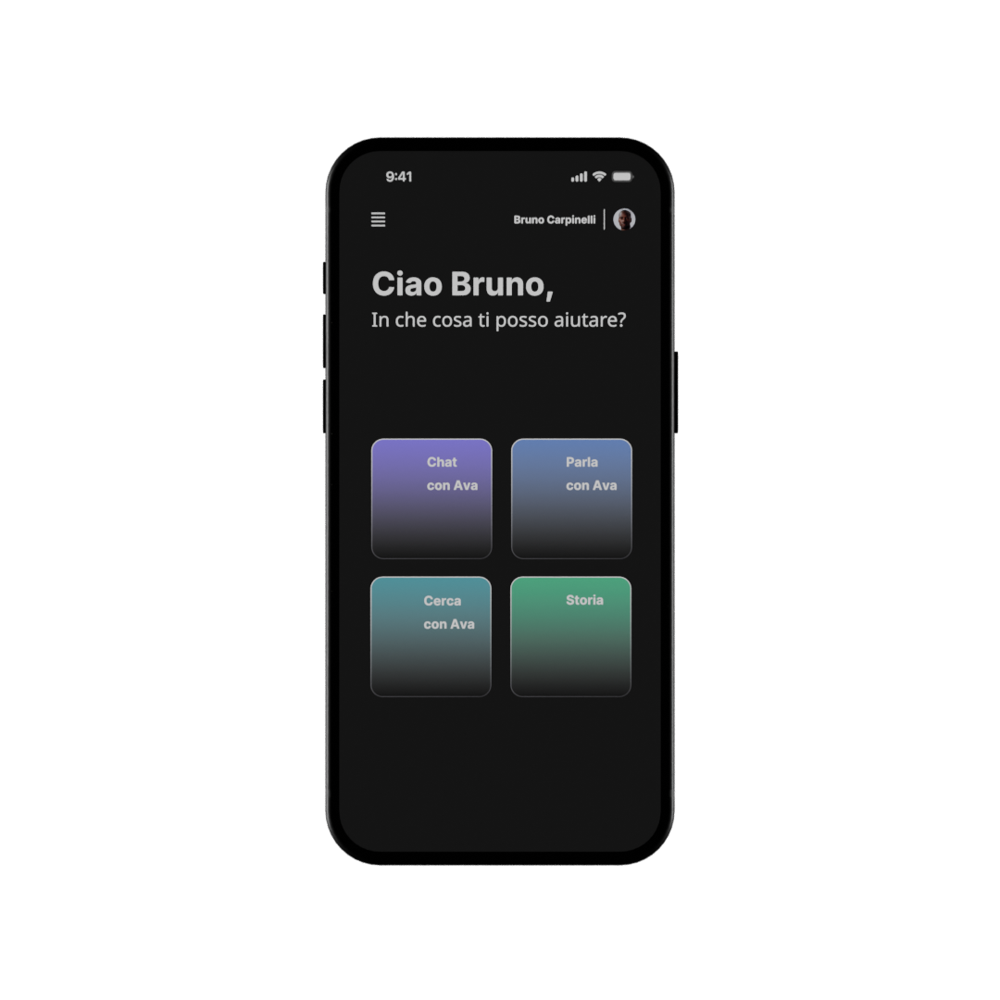
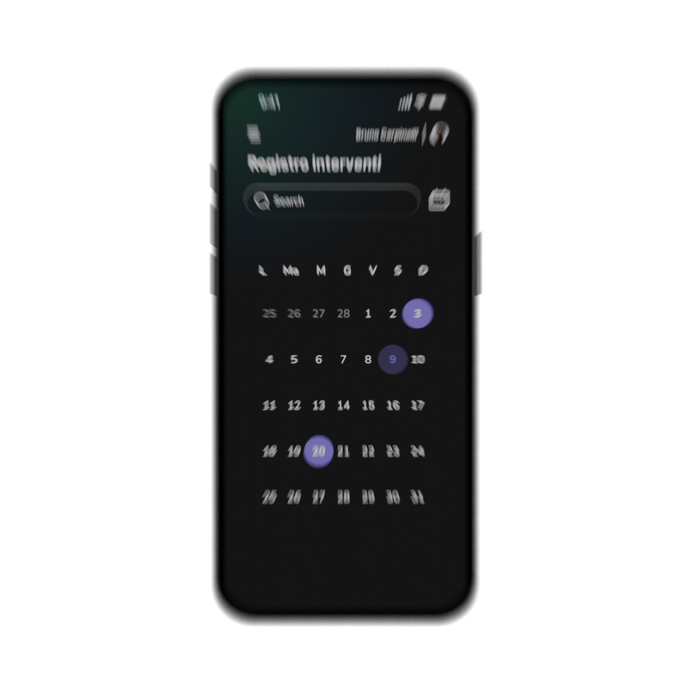

AVA
(realización del vídeo)
"AVA" (Artificial Virtual Assistant) es un asistente virtual que ayuda a los trabajadores en el mantenimiento gracias a la realidad aumentada.
Durante este proyecto se llevó a cabo una colaboración con «Marcegaglia», una gran empresa metalúrgica de Rávena, cuyos directivos y empleados del departamento de mantenimiento se prestaron a realizar algunas entrevistas con el objetivo de crear un concepto de sistema virtual interactivo para la asistencia durante el trabajo y la formación, a través de la realidad aumentada.
Además del diseño del sistema y las interfaces, el resultado final fue un vídeo promocional del sistema AVA, realizado con grabaciones de vídeo reales y escenas animadas con Blender.
AVATAR
 

Una icosfera generada con Geometry Nodes, compuesta por pequeñas icosferas situadas en sus vértices. Se aplica un sombreador transparente a la geometría, mientras que la iluminación violeta proviene de una luz puntual interna.


Una wave texture, modulada por parámetros que incluyen un nodo Value conectado al espectro de audio, sincroniza sus pulsaciones con la música.
GEOMETRÍA INTERNA
Para la geometría interna se utilizó una cuadrícula con una subdivisión de 25, a la que se le aplicó una esfera como objeto secundario. Mediante la instanciación de los vértices y la aleatorización de las transformaciones, las esferas se distribuyen de forma variada por la cuadrícula. A la cuadrícula se le aplicó un modificador Wireframe y un sombreador Emission de color púrpura para crear una estructura luminosa y dinámica.
GAFAS
 
Modelado de monturas, lentes y cámaras en Blender.
La transición del sombreador sólido al de rayos X se realiza mediante un Mix Shader, animando el valor del Factor de 1 a 0.
CHATBOT
 



Para crear la escena de la interfaz del chatbot para el móvil, se aplicó la textura de las pantallas al modelo del smartphone.
Los movimientos de la cámara siguen constantemente al sujeto iluminado por dos luces laterales, con un desenfoque de movimiento de 1/60s para conseguir un efecto de movimiento más realista.
Team:
Matteo Mengoli,
Filippo Tasquier,
Ginevra Angrisani,
Leonardo Oliver,
Lorenzo Rosini